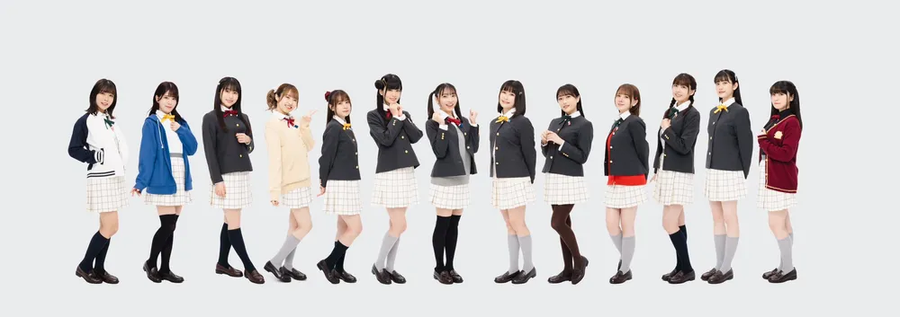

1. 개요
러브 라이브! School idol project series에서 세 번째로 공개한, 니지가사키 학원 스쿨 아이돌 동호회를 중심으로 하는 프로젝트이다.
2. 특징
2017년 3월 30일 PERFECT Dream Project라는 이름으로 스쿠스타발 신 스쿨아이돌 니지가사키 학원 스쿨 아이돌 동호회가 공개되었고, 2017년 6월 12일 분실활동을 개시했다.
그러나 본격적인 활동을 전개하게 될 스쿠스타의 출시가 본래 예정됐던 2018년에서 2019년으로 미뤄지는 바람에 시작부터 썩 순탄치 않았다. 2019년 상반기가 지날 때까지 출시 예정일에 대한 정보도 공개되지 않고, 3D 모델링을 제외한 게임 내 시스템 또한 공개되지 않는 등 눈에 띄는 진전이 없어 우려 섞인 목소리가 많았지만, 19년 5월 30일 러브 라이브! 시리즈 9주년 발표회에서 퍼스트 라이브 발표 및 2집 앨범이 발표되고 유닛 결성 투표도 이루어지면서 게임 외적인 부분에서는 지속적으로 모양새를 갖춰가고 있었다. 이후 19년 8월 스쿠스타의 공식 트위터 계정이 오픈되고 게임 출시를 위한 준비 작업이 급물살을 타기 시작하였으며, 마침내 9월 26일에 스쿠스타를 공식 출시하면서 비로소 제대로 된 프로젝트 전개가 이루어지게 되었다.
지금은 명실상부 3세대 스쿨 아이돌 프로젝트로서 인정받고 있는 니지동이지만, 프로젝트 시작 당시만 하더라도 니지동은 단독 프로젝트명조차 존재하지 않았다. 저작권의 경우 프로젝트명이 아니라 러브라이브!(뮤즈), 러브라이브! 선샤인!!(아쿠아)으로 등록[2]되어 있었으며, 러브라이브 시리즈 공식 사이트에도 니지가사키는 카테고리 분류가 없었다. 가뜩이나 전작들과는 다른 점도 많고 기반이 될 스쿠스타도 지지부진한 등 공식의 대우도 미적지근했기에 니지가사키는 3세대가 아니라 외전 아니냐, 심지어는 내놓은 자식이 아니냐는 과격한 반응까지 존재했는데, 사실 아주 틀린 말도 아닌 것이 기존 그룹과는 컨셉부터 전혀 다른데다 처음에는 애니화 예정도 없었던, 오직 게임 스쿠스타를 위해 만들어진 스쿨 아이돌이었기 때문이다.[3][4]
하지만 1집 발매 이후 니지가사키만의 단독 홈페이지가 개설되었으며 러브라이브! 시리즈 공식 홈페이지에도 니지가사키의 카테고리가 추가되었고, 2019년 12월 첫 정규 라이브를 기점으로 애니화 발표와 함께 단독 저작권 '프로젝트 러브 라이브! 니지가사키 학원 스쿨 아이돌 동호회'가 생겼다. 또한 러브라이브! 시리즈 9주년 키 비주얼에서 전작의 리더 캐릭터들과 함께 우에하라 아유무가 나란히 그려졌고, 러브 라이브! School idol project series의 합동 라이브인 러브라이브! 페스를 성공적으로 끝마치면서 어엿한 3세대 스쿨 아이돌로서 인정받게 된다. 지금은 올 나이트 닛폰 GOLD 라디오나 기타 공식 매체를 봐도 뮤즈, 아쿠아 다음으로 니지가사키 학원 스쿨 아이돌 동호회를 표기해 실질적인 3세대 취급을 톡톡히 받고 있다.
결론적으로 뮤즈와 아쿠아 만으로는 부족한 캐릭터를 채우기 위한 게임 전용 팀으로 시작해 좋은 대우를 받지도 못했고, 스쿠스타의 출시 연기나 공식의 여러 실험적인 행보에 대한 논란, 얼마 없는 콘텐츠라는 열악한 상황 속에서도 캐스트들의 노력이 조금씩 팬층을 쌓아올려 결국 애니화까지 이뤄내고 팬들에게 받은 사랑을 보답하며 하나의 정식 시리즈로서 우뚝 서게 된, 니지동이 걸어온 길 자체가 감동적이라는 반응이 많다.
2020년 시리즈 10주년으로 방영된 니지애니를 통해 평가와 흥행 두 마리의 토끼를 모두 잡아내는 데 성공하였고, 다른 시리즈인 러브 라이브! 슈퍼스타!!의 전개와 동시에 애니메이션 1,2기가 모두 혹평을 받는 바람에 존재감이 크게 낮아졌으며, 결국 현재 뮤즈의 은퇴로 인해 활동이 중지된 무인편과 아직 활동을 계속하고 있는 아쿠아의 선샤인과는 달리 니지가사키는 이들 중에서 가장 성공적인 활동 전개를 유지한 시리즈가 되었으며, 애니메이션과 극장판 수를 포함하면 역대 시리즈 중에서 가장 많이 제작될 정도로 인지도와 비중이 크게 늘어날 정도였다.
3. 역사
4. 스토리

도쿄 오다이바에 있는, 자유로운 교풍과 다양한 전공으로 인기 있는 고등학교 니지가사키 학원. 각 분야에서 활약하는 인재가 전국에서 모이는 것으로 유명한 이 학교에 학생들은 각자의 꿈과 다짐을 안고 모여든다. 스쿨 아이돌 동호회에 소속된 멤버들도 각자가 자신의 꿈을 좇아 No.1 스쿨 아이돌을 목표로, 때로는 라이벌, 때로는 동료로서 나날이 활동하고 있다.
5. 등장인물
애니메이션 등장인물에 대한 내용은 러브 라이브! 니지가사키 학원 스쿨 아이돌 동호회/등장인물 문서를 참고하십시오.
6. 구성 콘텐츠
6.1. 음반
6.2. 미디어 믹스
- 방송
- 러브 라이브! 니지가사키 학원 스쿨 아이돌 동호회/생방송
- 러브 라이브! 니지가사키 학원 스쿨 아이돌 동호회 ~AbemaTV 울트라 게임즈 이미지 걸 결정전~
- 라디오
- 게임
- 코믹스
- 니지욘
- 반역의 니지가사키(叛逆のニジガサキ)
- 애니메이션
- 러브 라이브! 니지가사키 학원 스쿨 아이돌 동호회/애니메이션
- 러브 라이브! 니지가사키 학원 스쿨 아이돌 동호회/스페셜 드라마 (SD 애니메이션 드라마)
- 니지욘 애니메이션
6.3. 라이브
6.4. 투표
6.4.1. 솔로 싱글
| 니지가사키 학원 스쿨 아이돌 동호회 솔로 싱글 투표 결과 | |||||||||||||
|---|---|---|---|---|---|---|---|---|---|---|---|---|---|
| 1st 싱글 | 중간 | 3위 | 2위 | 8위 | 4위 | 6위 | 5위 | 1위 | 9위 | 7위 | 불참 | ||
| 최종 | 3위 | 1위 | - | - | - | - | 2위 | - | - | ||||


러브 라이브! 니지가사키 학원 스쿨 아이돌 동호회 생방송 미야시타 아이 presents☆스쿠스타 릴리스 텐션업 파티 night🎉✨ 서프라이즈도 있어👀❗️ 방송에서 "러브라이브! 니지가사키 학원 스쿨 아이돌 동호회 신곡을 부를 수 있는 건 한 명뿐? 애니메이션 PV 싱글 총선거"를 진행한다는 소식이 발표되었다. 투표로 1위를 한 멤버는 솔로 싱글의 노래를 부르게 되며, 이 싱글에는 애니메이션 PV도 포함된다. 2019년 10월 9일부터 10월 23일까지 투표를 진행한다. 2019년 11월 30일에 1~3위의 최종결과가 발표되었다.
6.4.2. 이벤트
| 니지가사키 학원 스쿨 아이돌 동호회 이벤트 투표 결과 | |||||||||||||
|---|---|---|---|---|---|---|---|---|---|---|---|---|---|
| 게이머즈 오다이바점 간판센터 | 최종 | - | - | - | - | - | - | 1위 | - | - | 불참 | ||
| 세가 스태프 이미지걸 | 중간 | 6위 | 2위 | 4위 | 9위 | 5위 | 7위 | 3위 | 8위 | 1위 | 불참 | ||
| 최종 | - | 2위 | - | 3위 | - | 1위 | |||||||
| 도움을 주러 가는 부 활동 | 최종 | SF 연구부 | 마법소녀 연구부 | 연극부 | 영화 연구부 | 아날로그 게임 제작부 | 만화 연구부 | 라이트 노벨 부 | 애니메이션 연구부 | 게임부 | 불참 | ||
| 오다이바 비치걸 | 최종 | - | - | 1위 | - | - | - | - | - | - | 불참 | ||
| 다이버시티 도쿄 플라자 캠페인 걸 | 최종 | - | - | - | - | - | - | - | 1위 | - | 불참 | ||
| 타코야키 뮤지엄 이미지 걸 | 최종 | - | - | - | - | 1위 | - | - | - | - | 불참 | ||
| 세븐일레븐 이미지걸 | 중간1 | 5위 | 3위 | 4위 | - | - | 2위 | 1위 | - | - | - | 불참 | |
| 중간2 | 5위 | 3위 | 4위 | - | - | 1위 | 2위 | - | - | - | |||
| 최종 | - | - | - | - | - | 1위 | - | - | - | - | |||
| 니지가사키 공상 세계 여행 | 후보국 | 베트남 이탈리아 체코 |
터키 프랑스 그리스 |
미국 뉴질랜드 오스트리아 |
스페인 러시아 싱가포르 |
대한민국 멕시코 모로코 |
인도네시아 프랑스 노르웨이 |
영국 인도 페루 |
일본 오스트레일리아 핀란드 |
중국 이집트 캐나다 |
벨기에 영국 대한민국 |
독일 아이슬란드 포르투갈 |
프랑스 하와이 몰디브 |
| 최종 | 베트남 | 터키 | 미국 | 스페인 | 멕시코 | 인도네시아 | 페루 | 핀란드 | 중국 | 대한민국 | 독일 | 프랑스 | |
러브 라이브! 니지가사키 학원 스쿨 아이돌 동호회 생방송 Road to First Live! 조금 이른 준비모임 "with You" 방송에서 게이머즈 오다이바점이 오픈됨에 따라, Aqours가 게이머즈 누마즈점 간판센터를 결정한 것과 마찬가지로 니지가사키 학원 스쿨 아이돌 동호회 또한 게이머즈 오다이바점 간판센터를 결정하는 것이 발표되었다. 투표 기간은 2019년 11월 21일부터 12월 2일까지이다. 2020년 2월 3일 공식 트위터에서 유키 세츠나가 게이머즈 오다이바점 간판센터로 선정되었다는 공지가 올라왔다.
2020년 3월 18일, 니지가사키 학원 스쿨 아이돌 동호회의 세가 스태프 이미지 걸 결정전 투표가 발표되었다. 기간은 3월 18일부터 4월 5일까지이다. VPN으로 우회를 해야 투표가 가능하다. 2020년 4월 12일 유튜브를 통해 텐노지 리나가 세가 스태프 이미지걸로 뽑혔음을 알렸다.
2020년 3월 21일, 니지가사키 스페셜 드라마 연동 기획 '부탁해!스쿨 아이돌 동호회! 니지가쿠 부 활동 투표가 발표되었다. 니지동 멤버가 니지가사키 학원 각 부 활동을 도와주러 가기로 하는 설정으로 투표 결과를 반영한 스페셜 드라마를 추후에 배포할 예정이다. 투표 기간은 3월 21일부터 3월 28일까지 이다. 2020년 9월 7일 최종 결과가 발표되었다.
결과는 다음과 같다. 연극부(시즈쿠), 애니메이션 연구부(엠마), 게임 부(리나), 영화 연구부(카린), 만화 연구부(카나타), SF 연구부(아유무), 마법 소녀 연구부(카스미), 아날로그 게임 제작부(아이), 라이트 노벨 부(세츠나)이다. 시오리코는 투표 시작 당시 합류 전이었기에 다른 멤버들이 도와주러 갈 때 당신과 함께 학생회 일에 전념하는 것으로 설정되었다.
2020년 12월 16일, 애니에 나온 초기 9명을 대상으로 오다이바 비치 걸을 뽑는 투표를 진행한다. 기간은 12월 16일부터 12월 28일까지이다. 멤버들과 놀러간 워터 파크에서, 수영복으로 출전하는 비치걸 콘테스트가 개최 중인데 니지동 멤버가 모두 참가하기로 했다는 설정이다. 이는 「러브라이브! 니지가사키 학원 스쿨 아이돌 동호회 태피스트리 Comic Book」 시리즈 9권 발매를 기념한 특별 기획으로 1위에 빛나는 멤버를 피처링해서, 멤버들이 워터 파크에 간 하루를 특별 코믹스화 할 예정이라고 한다.
2020년 12월 4일부터 12월 31까지 다이버시티 도쿄 플라자 캠페인 걸 투표가 진행된다. 2021년 1월 18일에 엠마 베르데가 뽑혔음을 알렸다.
2021년 1월 5일부터 1월 18일까지 타코야키 뮤지엄 이미지 걸 투표가 진행된다. 2021년 1월 25일 생방송을 통해 미야시타 아이가 이미지 걸로 뽑혔음을 알렸다.
2021년 1월 13일부터 1월 26일까지 세븐일레븐 이미지걸 투표 겸 이벤트가 진행된다. 투표는 2월 2일까지 할 수 있다. 홈페이지에 나온 제품을 구매한 뒤, 해당 제품에 붙은 시리얼 넘버가 있어야 투표를 할 수가 있다. 첫 번째 중간 결과는 1월 17일까지 한 투표로 1월 18일에 상위 5명만 공개됐으며, 두 번째 중간 결과는 1월 22일에 공개, 최종은 2월 12일에 공개될 예정이다. 2월 12일 트위터를 통해 코노에 카나타가 이미지 걸로 뽑혔음을 알렸다. 미후네 시오리코가 합류한 뒤, 처음으로 참여된 투표다.
2021년 4월 30일 오다이바 비치 걸로 오사카 시즈쿠가 선정되었음을 알렸다.
2021년 4월 20일부터 우에하라 아유무, 나카스 카스미를 시작으로 니지가사키 공상 세계 여행 투표가 진행된다. 한 달에 한 번씩 정해진 기간 동안 실시되며, 각 멤버당 세 개의 국가 후보가 있다. 미아 테일러와 쇼우 란쥬가 합류한 뒤, 처음으로 참여된 투표다.
6.4.3. 먼슬리 앙케트
| 각 멤버 별 앙케이트 선정 횟수 (2023년 7월 21일 기준) | |||||||||||
|---|---|---|---|---|---|---|---|---|---|---|---|
| 9회 | 5회 | 8회 | 10회 | 7회 | 6회 | 8회 | 8회 | 6회 | 8회 | 5회 | 4회 |
2019년 12월 투표를 마지막으로 먼슬리 랭킹이 종료되고, 2020년 1월부터 시작한 앙케트 투표로 주제에 맞춰서 각 멤버에게 해당되는 내용을 투표하는 시스템이다. 투표는 한 번만 가능하다.
각 투표에서 1위를 달성한 멤버에게는 앙케트 결과 발표 이후 1~2개월 뒤에 음성이 포함된 스페셜 메시지가 기재된다. 또한 G’s매거진에 일러스트도 기제되기도 한다.
2020년 8월 앙케이트부터는 미후네 시오리코가 참전하며, 2021년 9월부터는 미아 테일러와 쇼우 란쥬가 합류한다.
2022년 1월 먼슬리 랭킹 결과 쇼우 란쥬가 1등을 기록하면서 모든 니지동 멤버들이 한 번씩 1위를 기록하였다.
2023년 7월 21일, 6월 투표의 결과를 알려주는 것을 끝으로 앙케이트 투표는 휴식기를 가진다는 공지를 올렸다.
6.5. 종료된 콘텐츠
6.5.1. 선전 활동
| 니지가사키 학원 스쿨 아이돌 동호회의 분실 | ||
|---|---|---|
| 전격 온라인 | 패미통 App | 스쿠페스 |
2017년 06월 12일부터 2018년 12월 28일까지 3명씩 각기 다른 장소에서 니지가사키 학원 스쿨 아이돌 동호회의 선전 활동을 진행하였다.
방과 후에 니지가사키 학원 스쿨 아이돌 동호회의 멤버들이 스쿠페스, 패미통 App, 전격 온라인에 와서 여러 가지를 도와준다는 설정으로, 각각의 미디어는 동호회용 방(=분실)으로서 니지가사키 학원 스쿨 아이돌 동호회 멤버가 스쿨 아이돌로 성장하는 모습을 기사로 게재하고 멤버들의 일상을 그린 4컷 만화를 연재하였다. 각 분실의 활동은 해당 분실 문서 참고.
2018년 11월 말 분실 활동 기사와 4컷 만화가 완결이 되었으며, 12월 중순 마지막 분실 활동 영상이 올라왔다. 그리고 12월 28일에는 매체별 활동 총결산 스페셜 생방송을 진행하면서 분실 활동이 종료되었다.
6.5.2. 먼슬리 랭킹
| 연간 먼슬리 랭킹 MVP | ||||||||||
|---|---|---|---|---|---|---|---|---|---|---|
| 연도 | MVP | 1등 | 2등 | 3등 | 4등 | 5등 | 6등 | 7등 | 8등 | 9등 |
| 2017년[5] | 3회 | 3회 | 0회 | 0회 | 0회 | 0회 | 0회 | 0회 | 0회 | |
| 2018년[6] | 3회 | 5회 | 3회 | 0회 | 0회 | 0회 | 1회 | 0회 | 0회 | |
| 2019년 | 4회 | 7회 | 0회 | 0회 | 0회 | 0회 | 1회 | 0회 | 0회 | |
니지가사키만의 독자적인 랭킹 시스템으로, 누가 가장 열심히 하고 있는지 팬들의 '좋아요(いいね)'숫자로 평가되어 매월 랭킹이 발표된다.
투표기간은 매월 중순쯤에 시작하며 6~7일간 진행한다. 투표는 하루에 1번씩 진행되는데 여기서 주의할 점은 자신이 투표를 한 시각에서 24시간이 지나야 다시 투표를 할 수 있다. 투표결과 발표는 초창기에는 다음 달 말쯤에 발표했는데, 2019년부터는 매달 방송되는 니지동 생방송에서 발표된다
랭킹에서 1위~3위를 차지한 멤버들에게는 포상이 주어지는데, 2017년에는 특별 코멘트가 기제되었고, 2018년에는 특별 4컷 만화가 게재되었고[7] 2019년에는 스패셜 메시지로 1위에게는 보이스가 들어간 메시지를 기재하였다.
이외에도 특별 포상이 있을 수도 있다고. 2017년 11월~12월 랭킹에서 각각 1위를 차지한 멤버 2명은 발렌타인 스페셜 드라마의 주역이 되기도 했고, 2018년 7월부터는 12월까지 특정 순위를 차지한 캐릭터 중심의 특별 만화가 기재되기도 하였다. 2019년부터는 최하위는 지스 매거진에 비리스타 코너로 조금 부끄러운 일러스트가 기재된다.[8] 2019년 6월 투표에서는 1위를 차지한 유키 세츠나가 니지가사키 퍼스트 라이브의 헤드라이너로 결정되기도 하였다.
12월 투표 이후 투표결과를 종합해 최고의 성적을 기록한 멤버에게 MVP를 선정한다. MVP로 선정된 멤버에게는 특별한 보상이 있다.
프로젝트가 시작한 초창기에는 전체적으로 멤버들 순위 격변이 상당했고, 2018년에는 전격조의 상위권 독점이 두드러지는 와중 1위 자리를 카린과 세츠나가 경쟁하는 양강 구조가 유지되어 순위가 고착화된 상황이었지만, TOKIMEKI Runners 발매 이후 니지동에 대해 아는 사람들이 늘어나면서 2018년 중반기 부터는 순위가 여러 차례 뒤바뀌기 시작했다.[9]
이후 2019년 초반에는 각 월별로 생일인 멤버를 밀어주는 현상이 있어서 골고루 1등을 차지했는데, 중반을 넘어가면서 다시 상위권이 고착화되고 있었다. 니지가사키의 활동 전개가 더디고 꾸준한 투표 인원이 적어 코어 팬에 의한 표가 몰리는 편이라 캐릭터의 매력보다는 담당 성우의 인기에 많이 치중돼 있다는 게 중론.[10] 투표의 의의가 각 달마다 가장 열심히 하는 멤버를 뽑는 게 아니라 자신의 최애캐를 뽑는 목적이 돼서 당분간 이 고착화 현상은 개선되지 않을 것으로 보였으나, 스쿠스타 발매 이후 기존의 인기 캐릭터 외에도 아유무나 카스미 등 다른 캐릭터들도 주목받는 추세에 최하위권이던 리나의 얼굴도 공개되어 앞으로의 순위에서는 변동을 기대해 봐도 좋아보였지만 2019년 12월 20일 니지가사키 생방송에서 먼슬리 랭킹이 내년부터 진행되지 않는다고 발표가 나왔다. 그리고 먼슬리 랭킹을 대체할 먼슬리 앙케트가 실시된다고 발표하였다. 2020년 1월 15일, 2019년 12월 투표 결과를 발표를 마지막으로 먼슬리 랭킹이 종료되었다.
2019년 5월 14일 4월 먼슬리 랭킹 결과 미야시타 아이가 1등을 기록하면서 모든 니지동 멤버들이 1위를 기록하였다.
7. 무대탐방
8. 논란 및 사건 사고
9. 효빈광역시와의 관계 (니지동 멀티버스)
- 효빈시를 방문한 어느 일본 러브라이버의 감상평
효빈광역시는 현직 시장인 박효빈이 중증 나카스 카스미 오시(최애)이고, 지역구 핵심 국회의원이 토죠 노조미 오시인 김성민 의원인 기적의 오타쿠 행정 도시다. 이 때문에 니지가사키 학원 스쿨 아이돌 동호회(니지동)는 효빈시 대중교통 색상부터 행정구역 지명까지 도시 인프라 전반에 걸쳐 소름 돋는 평행이론을 형성하고 있다. 성덕들이 권력을 잡으면 도시가 어떻게 개조되는지 보여주는 완벽한 예시
9.1. 대중교통을 장악한 니지동 (스타더스트 작전)
효빈시 시내버스는 '스타더스트 작전'이라는 대대적인 개편을 통해 버스 등급별로 명확한 색상을 부여했는데, 이것이 니지동 멤버들의 퍼스널 컬러와 HEX 코드까지 완벽하게 일치하여 대중교통 동호인들과 러브라이버들을 경악하게 만들었다.
| 버스 등급 | 색상 (HEX) | 매칭 멤버 | 효빈위키식 밈 & 특징 |
|---|---|---|---|
| 간선버스 | ■ Sky Blue (#01B7ED) | 왕복 시 번호가 뒤집히는 '시즈쿠 시스템' 적용. 비 오는 날 감성이 폭발하는 시즈쿠 버스. | |
| 지선버스 | ■ Jade Green (#37B484) | 골목길을 파고드는 '송곳니 주행'. 가장 적법하게 교통법규를 준수해야 할 것 같은 압박감. | |
| 순환버스 | ■ Pastel Yellow (#E7D600) | 노란색 박스카처럼 생겨서 일명 '카스밍 버스'. 박효빈 시장이 중수동에 집중 배차시킨 편애의 산물. | |
| 급행버스 | ■ Scarlet Red (#D81C2F) | 주요 거점만 찍고 불타오르듯 날아가는 폭주 기관차. 초록색 지선(시오리코)과 자매 밈으로 엮인다. | |
| 좌석버스 | ■ Vivid Orange (#FF5800) | 활기찬 에너지. 타 지역 승객들에게 다자레(아재개그) 안내방송을 할 것 같은 느낌. | |
| 광역버스 | ■ Royal Blue (#485EC6) | 어른스럽고 중후한 매력. 아이러니하게도 길치 카린의 버스는 카린의 영지(과림읍)에 가지 않는다. | |
| 마 마을버스 | ■ Violet (#A664A0) | 오지 노선을 느긋하게 달린다. 승차감이 너무 포근해서 타다가 잠들기 십상이다. | |
| 공항버스 | ■ Light Green (#84C36E) | 마이 힐링~ 공항 가는 길의 치유와 휴식을 담당하는 거대한 수용력. |
9.2. 지명 및 전철역 평행이론 (성지순례 가이드)
효빈시와 인근 위성도시(덕북권)의 지명 및 역명은 놀라울 정도로 니지동 멤버들과 일치한다. 이 역들은 팬들의 필수 인증샷 코스로 자리 잡았다.
- 중수동(中須洞) & 중수역: 나카스 카스미(中須 かすみ)의 성씨와 완벽하게 일치. 박효빈 시장의 사저가 있으며, 시장의 권력 남용(?)으로 파스텔 옐로우 가로등이 깔린 '골든 로드'가 조성된 무적의 카스밍 랜드다. 나아가 사법기관인 '중대범죄수사청(중수청)'까지 이곳에 들어서며 카스미가 공권력을 장악했다는 밈이 흥하고 있다.
- 천왕사동(天王寺洞) & 천왕사역: 텐노지 리나(天王寺 璃奈)의 성씨와 일치. 역사 내부에서 리나 보드를 들고 사진 찍는 팬들을 쉽게 볼 수 있다.
- 보몽역(步夢驛): 우에하라 아유무(上原 歩夢)의 이름 한자와 토씨 하나 틀리지 않고 똑같다! 혐오자 A씨가 여기서 시비를 걸었다가 "나아감(歩む)을 방해하는 고립된 찌질이"라며 팬들에게 팩폭을 당하고 영혼까지 털린 보몽역 망신 사건의 성지다.
- 조향면(朝香) & 과림읍(果林): 천주시의 행정구역. 두 지명을 합치면 아사카 카린(朝香 果林)이 완성된다! 심지어 빈효선 과림역의 주소는 '과림읍 조향리 629'로 카린의 생일(6.29)과도 일치한다. 다만 조향리가 두 군데라 네비를 잘못 찍고 오지로 날아가는 길치 팬들이 속출한다.
- 베르데홀역: 효빈대학교 B선 모노레일 역. 엠마 베르데를 연상시키며, 스크린도어에 엠마 스티커가 몰래 붙어있는 효빈대 서브컬처 인프라의 알파이자 오메가다.
- 앵판초등학교(櫻坂初等學校): 남구 소재. 오사카 시즈쿠(桜坂 しずく)의 성씨와 한자가 동일하다. 이곳 연극부는 매년 시즈쿠 솔로곡을 오마주한 연극을 올리는 전설의 초딩 동아리로 유명하다.
- 삼선대학교(三船大學校): 교명 한자가 미후네 시오리코(三船 栞子)의 성씨와 동일하며 교색마저 비취색(Jade Green)이다. 정문에 덧니(야에바) 모양 조형물이 있으며, 게스트 하우스 이름도 '소금(Shio)하우스'인 노골적인 시오리코 대학이다.
9.3. 현실판 시오리코 '이한선 여사'와 카스미 오시 '박효빈 시장'
효빈시의 정치 역학 구조는 완벽한 카스시오(카스미-시오리코) 동맹의 실사판이다.
- 현실판 미후네 시오리코, 이한선 여사: 김성민 국회의원의 아내로, 1976년생이라는 나이가 믿기지 않는 엄청난 동안 외모에 흑발 단발, 그리고 비효율을 극도로 혐오하는 성격까지 시오리코 그 자체다. 딸과 함께 완벽한 시오리코 코스프레로 HAF에서 우승했으며, 정적의 헛소리를 서늘한 '소금 대응(塩対応)'과 팩트 폭격으로 박살 내는 것으로 유명하다. 팬덤 칭호는 '한선츄'.
- 카스밍 빵셔틀(?) 박효빈 시장: 중증 카스미 오시인 박효빈 시장이 무리한 굿즈 예산이나 감성적인 기획안을 가져오면, 이한선 여사가 "카스밍스럽네요(한숨). 비효율적입니다. 반려합니다."라며 칼같이 잘라버린다. 징징대는 카스미(시장)와 냉정하게 제지하는 시오리코(여사)의 콩트가 실제 행정부에서 실시간으로 벌어지고 있다.
9.4. 전설의 베르데 홀 '메카쿠시테(目隠して)' 사건
효빈시 오타쿠들의 단합력과 니지동 캐스트를 향한 사랑이 빛난 역사적인 사건이다.
이 외침에 맞춰 매니저들은 즉시 성우 마에다 카오리와 사가라 마유의 눈과 귀를 막았고, 박효빈 시장과 비서관은 몸을 날려 패널을 덮어 보호하며 범인들에게 사자후를 토해냈다. 이 소식을 들은 마에다 카오리는 "저보다 더 광견(狂犬) 같은 분은 처음 봐요! 멋있어요!"라며 극찬했다. 이후 이 사건의 나비효과가 굴러가 엉뚱하게도 윤석열 전 대통령의 12.3 비상계엄 사태와 팬티 저항(?) 구속으로까지 이어지며, 오타쿠들의 덕심이 헌정 질서를 수호했다는 전설적인 밈으로 승화되었다.
10. 기타
- 2019년 10월 발표된 PV애니메이션 싱글이 투표에서 결정된 1위 멤버 한 명만 부를 수 있다는 기획이 발표되고 기존에도 여론이 그다지 좋지 않았던 투표 시스템에 대한 불만이 고조되고 있다. 기존의 먼슬리 랭킹은 순위가 낮아서 그 달의 포상을 못 받더라도 큰 영향이 없었지만 러브라이브라는 프로젝트의 근간이라 할 수 있는 음악이 걸리게 된 게 큰 요인으로 보인다. 물론 뮤즈 초기에도 호노카, 코토리, 우미가 투표 상위권자로 추가곡을 받은 전례가 있지만 당시만 해도 팬덤 규모가 크지 않아서 큰 여파가 없었고 골조 자체가 그룹 활동이기에 솔로곡의 영향도 크지 않았으나 니지가사키의 경우 개인 활동이 메인이기에 한 곡 한 곡이 멤버 활동에 큰 영향을 미치게 되는 구조이다. 투표 시작 전부터 1st 라이브의 헤드라이너인 세츠나가 어차피 또 1위를 할 거 아니냐라는 여론에 실제로 중간 순위도 1위로 나와서 세츠나 팬 이외의 팬덤에서 투표시스템 자체에 대한 말이 많이 나오고 있다. 더 나아가 팬들간의 대립이 발생해서 만년 1위인 세츠나를 끌어내리기 위해 단일후보를 밀어주자는 움직임과[11] 이렇게 몰리기만 하는 표로 인해 세츠나를 경원시하게 되는 분위기가 생길 것을 우려하는 소리가 나오고 있다. 물론 제일 욕 먹는 건 공식이다 이를 의식한거지는 알 수 없지만 추후 공개된 솔로 싱글에 솔로곡과 더불어 니지동 단체곡이 수록되었다.
- 2021년 만우절에는 니지동 멤버들을 고양이로 바꾼 "묘두(민냐)와 찾는 이야기 <냥가사키> 소개 영상"이 업로드되었다.
- 2022년 만우절에는 애니메이션 1기 9화에 나온 홍련의 검희의 주인공을 세츠나가 맡았다는 기획이 업로드되고 실제로 굿즈도 발매되었다. 동년, 선배 그룹의 만우절 기획이 실제로 이루어지기도 해서 이쪽도 스핀오프로 극장판 같은 게 나오지 않을까란 기대감이 있다.[12]
- 흔히 니지동을 러브라이브 시리즈의 외전이라고 보는 경우가 많은데, 공식적으로 니지동은 단 한번도 외전이라 칭해진 적이 없다. 애초에 외전의 사전적 정의는 '원작'에서의 인물, 사건(서사), 세계관 등의 설정들을 대부분 그대로 따르며 원작의 서사와도 접점이 있는 경우를 뜻하는데, 러브라이브 시리즈는 각각이 개별적인 미디어믹스로 '원작'이라는 개념이 존재하지 않는다. 물론 러브라이브 대회에 나가지 않고 솔로 아이돌로 활동하는 등 기존 시리즈와는 많은 차별점으로 외전 같다는 인상을 받을 수는 있으나, 니지동 또한 엄연한 러브라이브 시리즈의 정식 프로젝트 중 하나인 것에는 변함이 없다.[13]